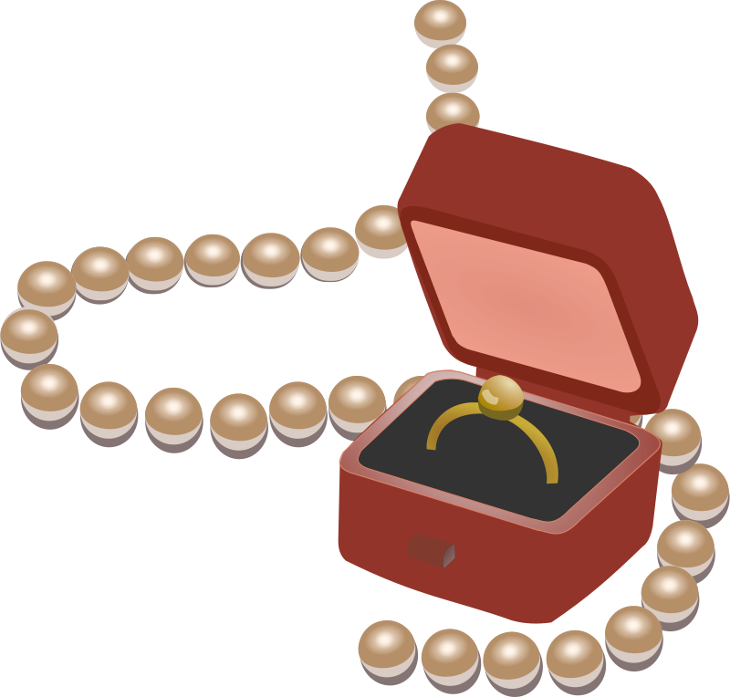

April Shower Deal

April Showers bring May Flowers! This month, make your special occasion extra special with our April Shower Sale. This month get up to 60% off on select items including necklaces, engagement rings bracelets, and earrings on your next purchase. And if that isn't enough, the April Shower deal allows you to get TWO items for free on purchases of 2 items - buy two, get two free!